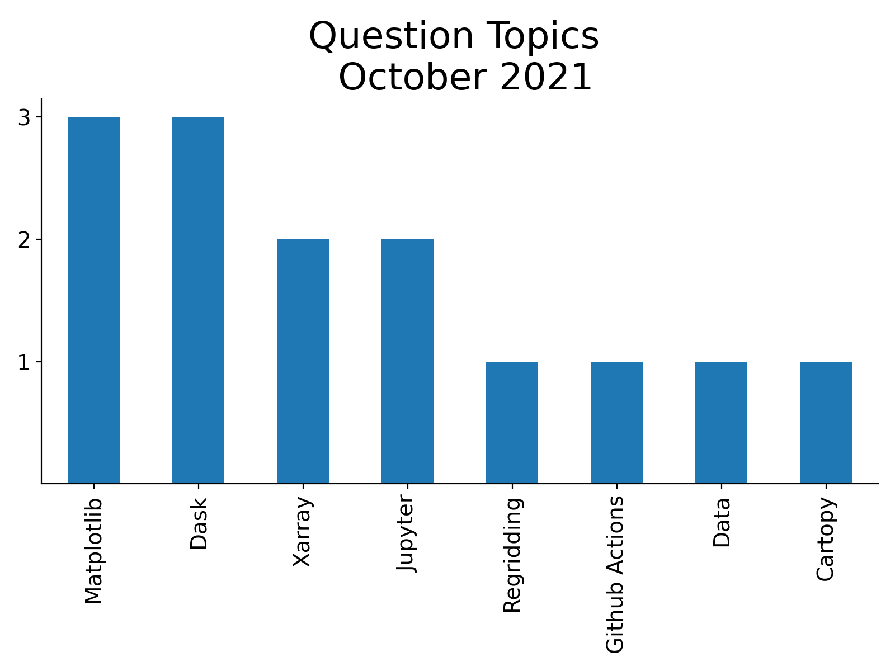
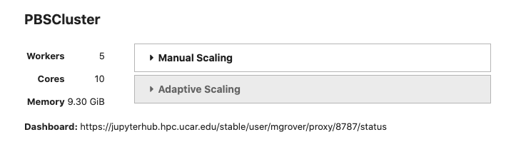

Posts tagged dask
ESDS Update November 2021
- 02 December 2021
November was an active month! There were a couple of ESDS Forum talks, a variety of answered Python questions during office hours, and a Python tutorial!
Check out the following ESDS update for the month of November 2021.

ESDS Update October 2021
- 28 October 2021
October has been an active month! There were a variety of talks, a variety of answered Python questions during office hours, and a Python tutorial!
Check out the following ESDS update for the month of October 2021.
Reading WRF data into Xarray and Visualizing the Output using hvPlot
- 15 October 2021
The typical data workflow within the Python ecosystem when working with Weather Research and Forecasting (WRF) data is to use the wrf-python package! Traditionally, it can be difficult to utilize the xarray data model with WRF data, due to a few challenges:
WRF data not being CF-compliant (which makes it hard for xarray to properly construct the dataset out of the box using xr.open_dataset)

Benchmarking Performance of History vs. Timeseries Files
- 17 September 2021
In this example, we will look at how long reading data from the Community Earth System Model (CESM), applying calculations, and visualizing the output takes using the following packages:
Scaling Python with Dask Class Takeaways
- 02 July 2021
This week, I had the opportunity to attend the Scaling Python with Dask class offered by Coiled. The class provided an overview of a variety of topics, including:
Parellelizing Python Code
Dask Distributed Summit 2021 Takeaways
- 28 May 2021
Cloud optimized datasets help improve speed of analysis
Entire 4 TB datasets open up in a few seconds
How to Use xarray.map_blocks for Vertical Interpolation of a 3D Field
- 28 April 2021
Within this example, we cover how to use xarray.map_blocks to calculate the mixed-layer depth within the CESM POP model output.
This calculation is “embarassingly parallel” such that each calculation is done within a single a column. The calculation should be easily computed within each column across the model domain. This is where map_blocks can be used to improve the performance of this metric.

NCAR-Jobqueue
- 15 April 2021
Last week, we added posts detailing how to configure Dask using the new PBS scheduler on Casper. In this week’s example, we provide an example of the recent updates to ncar-jobqueue, added by Anderson Banihirwe, which allow users to easily configure dask on Casper without having to add many extra steps.
You must update the package to use the newest updates. You can update using conda!
An Example of Using Intake-ESM
- 09 April 2021
This past week, NCAR CISL updated the Casper Node to use PBS instead of Slurm for scheduling jobs. This led a post in which an example of spinning up dask clusters on the new configuration. This was also an opportunity to dig into dask, and try applying it to a sample task, specifically looking at ecosystem variables in the CESM-LE dataset, using notebooks included in Matt Long’s krill-cesm-le repository, modified by Kristen Krumhardt.
Here, we spin up our dask cluster. At first, running this notebook resulted in a killed worker error. After further expection, we noticed that additional resources would be needed to read in the notebook since the data are so large (on the order of ~1-2 TB). Increasing the individual worker to a higher amount (ex. 256 GB) solved the issue. Scale up to as many workers as you think are neccessary for the calculation (this may take some trial and error).
Using Dask on the New Casper PBS Scheduler
- 06 April 2021
Casper will complete a transition from Slurm to the PBS Pro workload manager on April 7, 2021. This has implications for how to spin up a Dask cluster, including via the NCAR Jupyterhub.
Below is an example script suitable for the new configuration using the PBSCluster function from dask_jobqueue. Note that the ncar_jobqueue package requires updating to work with the new configuration.
Writing multiple netCDF files in parallel with xarray and dask
- 29 June 2020
A typical computation workflow with xarray consists of:
reading one or more netCDF files into an xarray dataset backed by dask using xr.open_mfdataset() or xr.open_dataset(chunks=...),